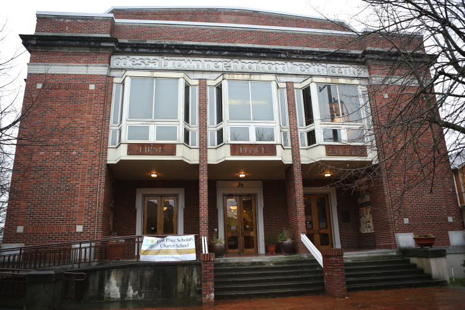

Family Support Services
We have a case manager to work with every family who enrolls their child at First Place. The case manager assists parents through the enrollment process and in filling out DSHS paperwork. The case manager also provides supportive services including job training, life skills, housing and healthcare. These services are offered on an as-needed basis.
The case manager also helps facilitate our approach to working with children experiencing behavioral challenges. Our program brings together the teachers, case manager, counselor and family to work together for the benefit of the student and the family.

Read More ›
First Place Family Support Services (FSS) currently manages and case manages ten units of traditional housing and three sets of permanent housing, totaling 41 units of permanent housing throughout the Seattle area. All families in our housing program and school program receive case management services.
FSS also services families enrolled in our school but are in permanent, transitional or shelter housing from one of our partner agencies. Families living in our housing program are welcomed, not required, to have their student attend First Place.
Read Less ›
Case Management
Our Case Management model is built on five Core Competencies; we see these competencies as the pillars to a foundation that will help the family move towards self-sufficiency. The Core Competencies revolve around the following areas:
- •Housing
- •Education/Training
- •Job Readiness/Employment
- •Life Skills
- •Health/Mental Health
Case Managers work in a variety of capacities with families using the Core Competencies Model, all based on the individual families' needs.
First Place's strength-based Case Management Model builds on the existing strengths of the family and focuses on competencies that support self-sufficiency. Based on the assessment, clients are referred to First Place partners for health services, chemical dependency programs, benefit programs (TANF, food-stamps, SSI/SSA), legal aid programs, domestic violence services, veteran's services and other community providers as needed.
Read More ›

Our Case Managers guide, support, and provide the necessary tools for a family to continue managing their everyday life and be on the road to self-sufficiency. The scope of our Case Managers' work includes:
•Enrolling new clients seeking services;
•Identifying family needs and developing an action plan with reasonable goals and strategies that help the family move towards self-sufficiency;
•Conducting regular check-ins to ensure progress against plan;
•Maintaining active case files, supporting students in the school, and meeting relevant reporting requirements
Our Case Managers' intake interview develops an understanding of the culturally-based needs: families are asked to address their specific needs and participate in the development of the plan to accomplish their goal of overcoming stable housing barriers.
We utilize the Language Bank and the families' own advocates to facilitate communication during the intake process. Often, we find that families have an advocate through prior relationships and faith communities who, when asked, are willing to help ensure the family's specific cultural-based needs are understood. As needed, we offer access to resources as are appropriate for each familiy's unique circumstances.
Read Less ›